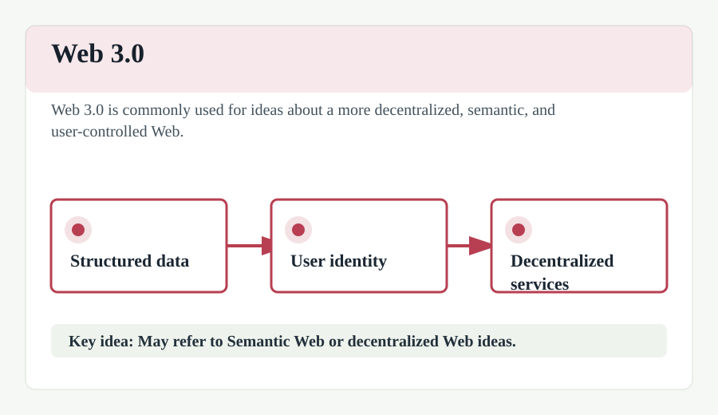

Web 3.0
Web 3.0, also known as the "Semantic Web" or "Decentralized Web," represents the next iteration or phase of the evolution of the Web. It aims to make the Web more intelligent, autonomous, and open.
Key features include the use of artificial intelligence to provide faster and more relevant data to end-users, and the use of blockchain technology to decentralize data ownership and improve security and privacy.
